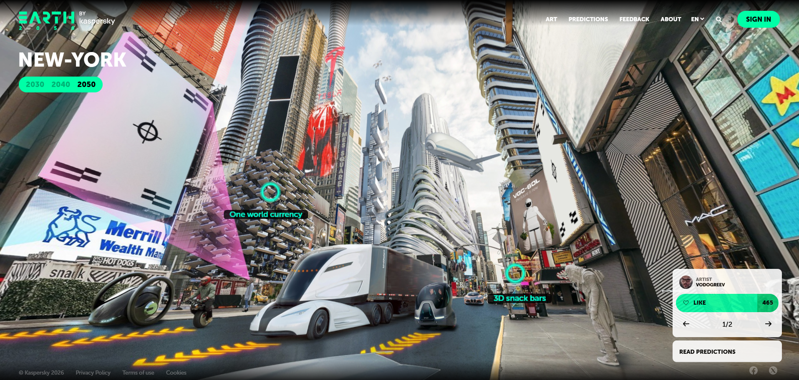
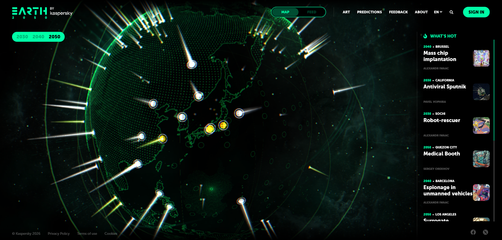
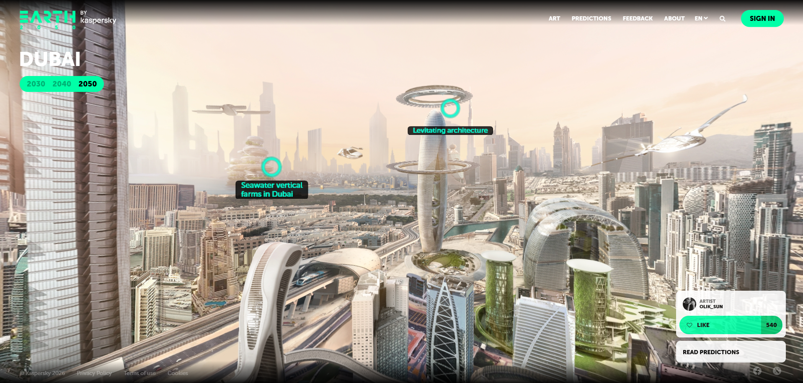
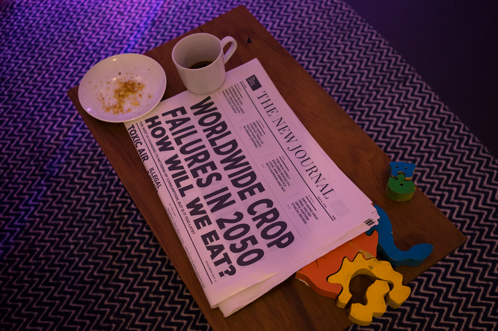
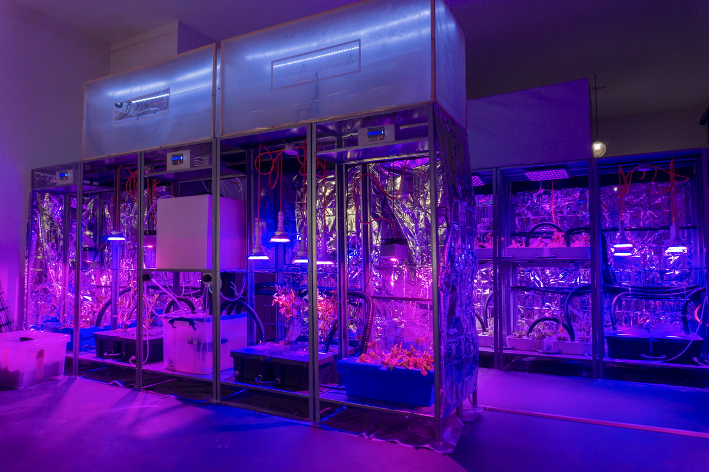
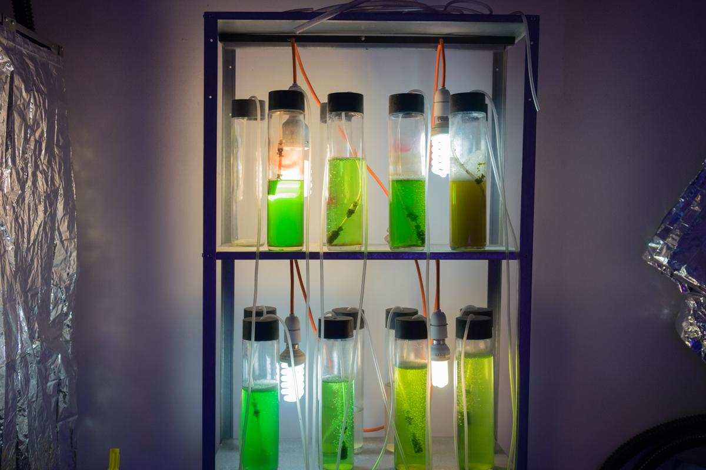

An immersive fictional installation set in a London apartment in the year 2049, in the midst of the world feeling the worsening effects of climate change. The installation is an actual physical location, where the installation itself is the interface. Visitors are invited to explore the ways that the apartment's inhabitants have adapted their lives to survive, as visitors are allowed to move and examine the space at their own pace. The project's greatest strength, which is its physical context, is also its most glaring weakness, as there is no way of interacting with it outside of the installation.



This website is an interactive multimedia platform that showcases predictions centered around cities around the globe as well as artifacts that could influence people's lives in the near future. Many of the predictions are contributed by a wide array of professionals like futurists, researchers, artists, and scientists. The site looks like an interactive globe, where users are allowed to choose cities as points of interest as well as their respective predictions. The participatory element of the website is one of the more distinctive features, as viewers are not simply passive observers, but instead those who are able to comment their own thoughts and provide feedback about specific predictions.